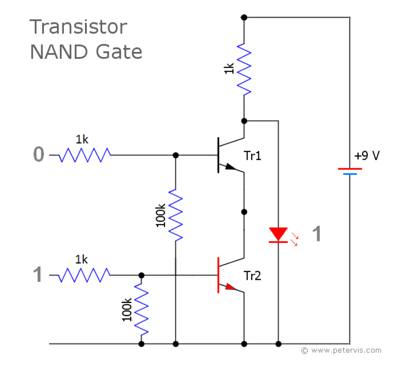
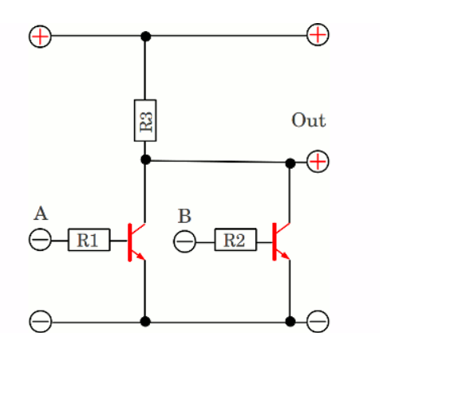
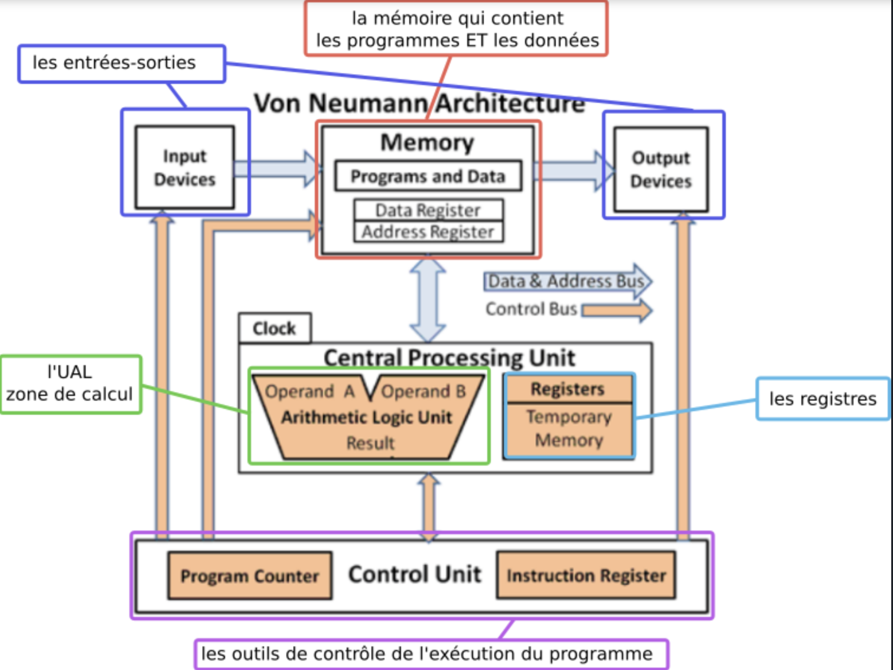

Architecture matérielle
Les portes logiques#
Contexte#
Les circuits d’un ordinateur manipulent uniquement des chiffres binaires 0 ou 1 qui sont simplement représentés par des tensions électriques (0 ou +V). On peut réaliser des opérations sur ces nombres binaires à l’aide de circuits logiques qui sont concrètement construits à partir de transistors. Ces transistors peuvent se comporter comme des interrupteurs à la manière de l’exemple suivant.
Lorsque la broche B est sous tension (+V), un courant peut s’établir entre E et la masse . Le sens du courant est indiqué par la petite flèche. Le transistor peut alors être considéré comme un interrupteur fermé. Inversement, quand B est à 0 V, la broche E reste sous tension haute et le transistor peut être considéré comme un interrupteur ouvert.
La porte NOT (ou NON)#
La porte NOT demande un seul transistor. Elle est la plus simple de toutes les portes.

Elle n’a qu’un seul bit en entrée (E) et sa sortie (S) vaut 1 quand l’entrée vaut 0 et inversement. on peut obtenir ce que l’on appelle la table de vérité de la porte "NOT" (voir ci-dessous).
| entrée E | sortie S |
|---|---|
| Ø | 1 |
| 1 | Ø |
On en déduit l'équation suivante : \(S = \overline{E}\)
Graphiquement, on représente cette porte comme dans le schéma ci-dessous (notation américaine).

La porte AND (ET)#
La table de vérité de la porte "AND" est représentée ci-dessous.
| entrée A | entrée B | sortie S |
|---|---|---|
| Ø | 0 | 0 |
| 0 | 1 | 0 |
| 1 | 0 | 0 |
| 1 | 1 | 1 |
On peut en déduire l'équation \(S =A.B\)

On peut illustrer cette fonction de la manière suivante: Une lampe s'allume si l'on appuie sur « a » ET « b » et seulement dans ce cas là. La fonction « ET » est caractérisée par des interrupteurs NO (normalement ouvert) montés en série.

La porte NAND (NON ET)#
La table de vérité de la porte "NAND" est représentée ci-dessous.
| entrée A | entrée B | sortie S |
|---|---|---|
| Ø | 0 | 1 |
| 0 | 1 | 1 |
| 1 | 0 | 1 |
| 1 | 1 | 0 |
On peut en déduire l'équation \(S = \overline{A.B}\)

Remarque :
Cette porte peut être réalisée de la manière suivante:

Porte OR (OU)#
La table de vérité de la porte "OR" est représentée ci-dessous.
| entrée A | entrée B | sortie S |
|---|---|---|
| Ø | 0 | 0 |
| 0 | 1 | 1 |
| 1 | 0 | 1 |
| 1 | 1 | 1 |
On peut en déduire l'équation $S = A + B $

Porte NOR (NON OU)#
La table de vérité de la porte "NOR" est représentée ci-dessous.
| entrée A | entrée B | sortie S |
|---|---|---|
| Ø | 0 | 1 |
| 0 | 1 | 0 |
| 1 | 0 | 0 |
| 1 | 1 | 0 |
On peut en déduire l'équation $ S = \overline{A + B} $
Remarque :
Cette porte peut être réalisée de la manière suivante:

La porte XOR (OU EXCLUSIF)#
La table de vérité de la porte "XOR" est représentée ci-dessous.
| entrée A | entrée B | sortie S |
|---|---|---|
| Ø | 0 | 0 |
| 0 | 1 | 1 |
| 1 | 0 | 1 |
| 1 | 1 | 0 |

Une application des portes logiques : les masques de sous-réseau#
Dans un réseau TCP/IP, un ordinateur a une adresse IP qui l’identifie de manière unique (comme un numéro de téléphone), ainsi qu’un masque de sous-réseau.
L’adresse IP et le masque de sous-réseau sont des groupes de 4 entiers positifs, codés tous les deux sur 4 octets. Le masque identifie à quel sous réseau d’Internet il fait partie, et permet d’obtenir l’adresse IP du sous-réseau à l’aide d’une opération booléenne.
Exemple : un ordinateur a pour adresse IP 192.168.0.42 et son masque de sous-réseau est 255.255.255.0.
| IP | 11000000101010000000000000101010 |
|---|---|
| Masque | 11111111111111111111111100000000 |
| AND | 11000000101010000000000000000000 |
| Adresse du sous-réseau |
Pour obtenir l’adresse du sous-réseau de l’ordinateur, on effectue alors un AND entre les octets de l’adresse IP et les octets du masque. En représentation binaire, cela donne :
Sur un processeur 32 bits, le AND est une opération primitive du processeur, donc l’opération de déter- mination du sous-masque réseau se fait en une opération.
Des portes logiques à l’ordinateur#
Circuit combinatoire et circuit séquentiel#
D’une manière générale, les circuits électroniques possèdent plusieurs entrées et plusieurs sorties. Quand les sorties dépendent directement et uniquement des entrées, on parle de cicuits combinatoires. Il existe d’autres types de circuit qui s’appellent circuits séquentiels. Les sorties de ces circuits dépendent d’un état antérieur du circuit. C’est ce type de circuit qu’on utilise pour réaliser des mémoires (RAM, registres,etc...).
Un exemple de circuit combinatoire logique : l’additionneur#
En combinant les portes logiques, on obtient des circuits plus complexes. Par exemple en combinant 2 portes "OU EXCLUSIF", 2 portes "ET" et une porte "OU" on obtient un additionneur représenté ci-dessous.

Comme son nom l’indique, l’additionneur permet d’additionner 2 bits (E1 et E2) en tenant compte de la retenue entrante ("Cin" "carry in" en anglais). En sortie on obtient le résultat de l’addition (S) et la retenue sortante ("Cout").
Les mémoires#
On stocke l’information à l’aide de circuit dit de type "bascule". Ce circuit est une combinaison de plusieurs portes logiques.
Il n’est pas question pour nous d’étudier ce type de circuit, le schéma ci-dessus vous permet juste de vérifier qu’une fois de plus nous avons bien à faire à une combinaison de porte logique.

Le modèle de von Neumann#
Von Neumann#
John Von Neumann (1903-1957) est un ingénieur, mathématicien et physicien américano-hongrois.Il a participé au projet Manhattan (première bombe atomique) et à l'ENIAC.

Son nom reste attaché à un modèle qu'il propose en 1944, modèle d'architecture novateur qui sert toujours de base à nos architectures actuelles.
Modèle de Von Neumann#
Le modèle de Von Neumann précise les 4 composants essentiels ainsi que les interactions entre ces différents composants. Ces composants sont les suivants :
On distingue 4 zones essentielles :
-
le CPU (Central Processing Unit) qui contient lui-même :
- l'Unité Arithmétique et Logique (UAL) dans laquelle sont effectuées les opérations de base (addition, multiplication...) Cette zone comporte notamment les registres (peu nombreux, de l'ordre de la dizaine) qui sont les espaces de travail ultra-rapides dans lesquels l'UAL va effectuer ses calculs. Une fois ceux-ci effectués, les valeurs des registres repartent dans la mémoire.
- l'Unité de contrôle, qui va séquencer les opérations. Lorsqu'on parle d'un processeur à 3 GHz, cela signifie (approximativement) que Unité de Contrôle va envoyer l'ordre d'une nouvelle opération à l'UAL 3 milliards de fois par seconde. Cette unité joue le rôle de chef d’orchestre de l’ordinateur !
-
la mémoire, qui contient à la fois les données à traiter et les instructions du programme. Cette idée de stocker au même endroit données et programme est l'idée centrale de l'architecture von Neumann.
- les bus de communication (des fils électriques permettant de transporter les données entre les différents composants). les Entrées/Sorties, permettant de gérer les informations avec l'extérieur.

Évolution des CPU#
Pendant des années, pour augmenter les performances des ordinateurs, les constructeurs augmentaient la fréquence d’horloge des microprocesseurs. La fréquence d’horloge d’un microprocesseur est liée à sa capacité d’exécuter un nombre plus ou moins important d’instructions machines par seconde. Plus la fréquence d’horloge du CPU est élevée, plus ce CPU est capable d’exécuter un grand nombre d’instructions machines par seconde. Actuellement, les processeurs fonctionnent entre 1,5 et 3 GHz.

Comme vous pouvez le remarquer sur le graphique ci-dessus, à partir de 2006 environ, la fréquence d’horloge a cessé d’augmenter, pourquoi ? À cause d’une contrainte physique : en effet plus on augmente la fréquence d’horloge d’un CPU, plus ce dernier chauffe. Il devenait difficile de refroidir le CPU, les constructeurs de microprocesseurs (principalement Intel et AMD) ont décidé d’arrêter la course à l’augmentation de la fréquence d’horloge, ils ont décidé d’adopter une nouvelle tactique.
Avec la miniaturisation croissante des transistors, les concepteurs de processeurs ont pu par la suite proposer des processeurs à plusieurs cœurs aussi appelés "multicœurs". Ce qui revient, dans les grandes lignes, à faire rentrer plusieurs processeurs dans un seul, chacun pouvant traiter une instruction à la fois, mais en parallèle des autres cœurs.
On pourrait se dire que l’augmentation du nombre de coeurs entraîne obligatoirement une augmentation des performances du CPU, en fait, c’est plus que complexe que cela : pour une application qui n’aura pas été conçue pour fonctionner avec un microprocesseur multicoeur, le gain de performance sera très faible, voir même nul. En effet, la conception d’applications capables de tirer profit d’un CPU multicoeur demande la mise en place de certaines techniques de programmation.
Il faut aussi avoir conscience que les différents coeurs d’un CPU doivent se "partager" l’accès à la mémoire vive : quand un coeur travaille sur une certaine zone de la RAM, cette même zone n’est pas accessible aux autres coeurs, ce qui, bien évidemment va brider les performances.
De plus, on trouve à l’intérieur des microprocesseurs de la mémoire "ultrarapide" appelée mémoire cache (il ne faut pas confondre mémoire cache et registres). Le CPU peut stocker certaines données dans cette mémoire cache afin de pouvoir y accéder très rapidement dans le futur, en effet, l’accès à la mémoire cache est beaucoup plus rapide que l’accès à la RAM. La mémoire cache ayant un coup assez important, la quantité présente au sein d’un CPU est assez limitée, les différents coeurs vont donc devoir se partager cette mémoire cache, ce qui peut aussi provoquer des ralentissements (en faite il existe plusieurs types de mémoire cache appelés L1, L2 et L3, chaque coeur possède son propre cache L1, alors que les caches L2 et L3 sont partagés par les différents coeurs)
Assembleur#
Le simulateur#
On trouve en ligne un simulateur.
Remarque : ne pas l’ouvrir avec Firefox car dans ce navigateur, les instructions ne s’affichent pas correctement dans la RAM.

Il se décompose ainsi :
- Une mémoire vive (à droite) dont chaque case mémoire (cellule) comporte 32 bits . Chaque cellule de la mémoire possède une adresse (de 000 à 199), ces adresses sont codées en base 10 (vous pouvez vous en assurer en cliquant sur OPTION puis binary).
- Un éditeur (à gauche) pour taper le programme en assembleur ;
- Le processeur (au centre) constitué principalement de l’Unité de Contrôle, de l’Unité Arithmétique et Logique et des registres de R0 à R12 plus un compteur de programme (PC pour Program counter) qui contient en permanence l’adresse de la prochaine instruction à exécuter.
Les instructions#
Chaque processeur possède son propre jeu d'instruction. Pour celui proposé, les instructions sont disponibles sur cette page. Voici les principales instructions traduites :
- LDR Rd, < adresse mémoire > : charge la valeur enregistrée dans l' < adresse mémoire > dans le registe d
- STR Rd, < adresse mémoire > : enregistre la valeur du registre d dans la mémoire spécifiée par < adresse mémoire >
- ADD Rd, Rn, < operand2 > : ajoute la valeur spécifiée par < operand2 > à la valeur du registre n et enregistre le résultat dans le registre d
- SUB Rd, Rn, < operand2 > : soustrait la valeur de < operand2 > à la valeur du registre n et enregistre le résultat dans le registre d
- MOV Rd, < operand2 > : copie la valeur < operand2 > dans le registre d
-
CMP Rn, < operand2 > : compare la valeur de registre n avec la valeur de < operand2 >.
-
B < label > : branchement inconditionnel jusqu'à la positon < label > dans le programme.
-
B < condition > < label > : branchement conditionnel vers la position < label > dans le programme si la dernière comparaison rempli le critère spécifié par < condition >. Les valeurs possibles sont : EQ:égal à ; NE: n'est pas égal à; GT:Plus grand que; LT: Moins grand que.
- AND Rd, Rn, < operand2 > : effectue l'opération bit à bit logique AND (ET) entre la valeur du registre n et la valeur < operand2 > et enregistre le résultat dans le registre d.
- ORR Rd, Rn, < operand2 > effectue l'opération bit à bit logique OR (OU) entre la valeur du registre n et la valeur < operand2 > et enregistre le résultat dans le registre d.
- EOR Rd, Rn, < operand2 > : effectue l'opération bit à bit logique XOR(OU exclusif) entre la valeur du registre n et la valeur < operand2 > et enregistre le résultat dans le registre d.
- MVN Rd, < operand2 > : effectue l'opération bit à bit logique NOT (NON) sur la valeur < operand2 > et enregistre le résultat dans le registre d.
- LSL Rd, Rn, < operand2 > : décale de < operand2 > bit(s) vers la gauche la valeur du registre n et enregistre le résultat dans le registre d
- LSR Rd, Rn, < operand2 > : décale de < operand2 > bit(s) vers la droite la valeur du registre n et enregistre le résultat dans le registre d
-
HALT Arrête l'execution du programme.
-
< operand2 > peut être #nnn (c'est à dire un nombre, exemple #42) ou bien Rm (c'est à dire le registre m , par exemple R1 est le registre numéro 1)
-
Les registres vont de R0 à R12.
Compléments data, INP et OUT :
-
la pseudo instruction DAT vous permet de mettre un nombre dans la mémoire en utilisant l'assembleur. Un label peut aussi être pris comme donnée.
-
INP Rd,2 : lis un nombre dans le registre d.
-
OUT Rd,4 : retourne en sortie le nombre du registre d. Pour OUT, vous pouvez retourner des nombres signés (positifs ou négatifs \(\rightarrow\) paramètre 4), des nombres non signés (que positifs \(\rightarrow\) paramètre 5), des hexadécimaux (paramètre 6) ou des charactères (paramètre 7). Vous pouvez entrer des hexa comme 0xnnn partout où un nombre est attendu.
Exemples et exercices#
Exemple 1#
Interprétation :
- On place dans le registre R0 du processeur la valeur 42 ;
- On place le contenu du registre R0 (à savoir 42) dans la mémoire vive à la place 150 ;
- On stoppe le programme ;
- Taper ce programme dans l’éditeur du simulateur, et le faire fonctionner. Observer.
Exercices#
Exercice :
À l’aide des instructions décrites dans le chapitre précédent, dites ce que fait ce programme suivant ligne par ligne, puis l’exécuter. Vérifier ce que vous aviez trouvé.
Exercice :
Écrire un programme qui effectue une soustraction entre 95 et 52, l’enregistre en mémoire (à la place 143) et qui affiche le résultat dans la console Output. Le taper et l’exécuter.
Exemple 2#
Cet exemple s’affiche quand on clique sur SELECT puis max dans le simulateur.
Interprétation :
- On place deux nombres dans les registres R0 et R1 grâce à la fonction INP ;
- On compare le contenu du registre R1 au contenu du registre R0 ;
- Si le contenu de R1 est plus grand que celui de R0, on effectue un branchement jusqu’au label HIGHER et on affiche le contenu de R1 ;
- Sinon, on affiche le contenu de R0 ;
- On effectue le branchement conditionnel vers done qui stoppe le programme.
Exercice :
Réaliser un programme qui prend deux nombres et qui retourne le plus petit.
Exercice :
Traduire le programme python ci-dessous en assembleur
L’assembleur et le python#
En python aussi, on peut avoir une idée de ce qui est traduit en langage machine grâce à la bibliothèque dis comme dans l’exemple suivant. Taper l’exemple suivant dans un éditeur Python et observer.
Exercice :
Traduire en assembleur AQA (celui que nous avons vu) le langage d’assemblage issu du python.
Bibliographie#
- Le site de David Roche
- Le site des enseignants du lycée Blaise Pascal à Saint-Dizier
- Le simulateur ainsi que la documentation en anglais
- Le site du Yeti
- Le livre Numérique et Sciences Informatiques aux éditions ellipses de Thibaut Balabonski, Sylvain Conchon, Jean-Christophe Filliâtre et Kim Nguyen.